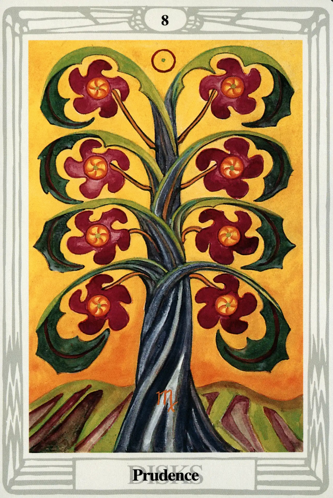

Disks
Eight of Disks
Prudence

(Sol in Virgo)
0° to 10° Virgo
August 23 to September 1
Original Title: Lord of Prudence.
Golden Dawn Model: From clouds at the bottom of the card, a hand appears grasping a branch of a rose tree with four white roses on it. They touch only the four lowermost disks. Leaves touch the four uppermost disks. The disks are arranged thus:
Princess Scale for Hod: Yellowish-Brown, flecked White.
The Four Scales for Sol: Orange; Gold Yellow; Rich Amber; Amber, rayed Red.
The Four Scales for Virgo: Green (yellowish); Slate Grey; Green Grey; Plum color.
Formula: 8 (Hod) of Disks (Assiah) + Sol in Virgo = PRUDENCE
Why is the Eight of Disks, Prudence, so inoffensive, while the Seven of Disks, Failure, is so perfectly awful? Both cards are low on the Tree of Life, and off the middle pillar. The formula explains it all.
Hod is the sphere of Mercury. Mercury both rules and is exalted in Virgo. Virgo is the mutable zodiac sign (and therefore the stabilizing influence) of Earth. Earth is the element of Assiah and the suit of Disks. (Isn't this cozy?) And finally, the Sun radiates its life-giving rays upon all this mental (Mercury) fertility (Virgo/earth).
Of course, everything isn't perfect. The number eight position is still unbalanced and weak. There are enough mitigating factors, however, to make Crowley comment that this card “signifies intelligence lovingly applied to material matters, especially those of the agriculturist, the artificer and the engineer.”
The disks are plum-colored blossoms of a thick-stalked tree firmly planted in the earth. Like the disks in the Golden Dawn model, they are arranged to suggest the figure Populus, which is one of two geomantic symbols representing the Moon. In all candor, I am unsure why this is so. Perhaps because of the Moon's association with the planting of crops.
This card is well named, for prudence is a passive activity. It is calculating. Plant and wait. Wait and see. Bet—but only if you've fixed the game.